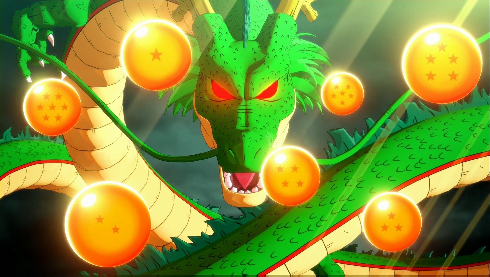

Unete al maravilloso mundo de Goku y sus amigos

Revive las aventuras de goku pequeño
Su trama describe las aventuras de Gokū, un guerrero saiyajin, experto en artes marciales que en su infancia inicia sus viajes y aventuras en las que pone a prueba y mejora sus habilidades de pelea, enfrentando oponentes y protegiendo a la Tierra de otros seres que quieren conquistarla y exterminar a la humanidad.
Mira mas

Conoce a Shen-Long
Un dragón que concede deseos, aparece cuando alguien reúne las Dragon Balls de la Tierra y pronuncia el conjuro mágico. Fue creado por Kami a partir de una estatuilla modelada por Mr. Popo y tiene la apariencia de un dragón chino de color verde.
Mira más